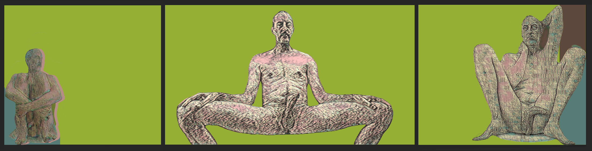
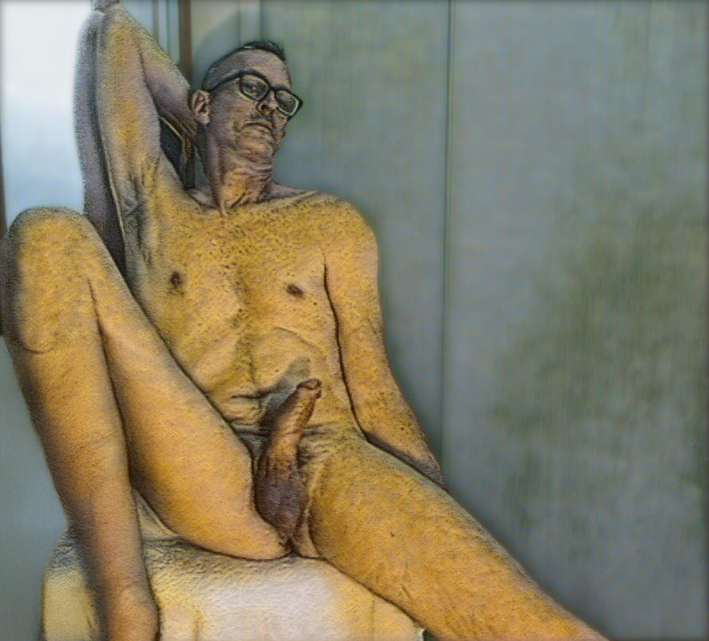
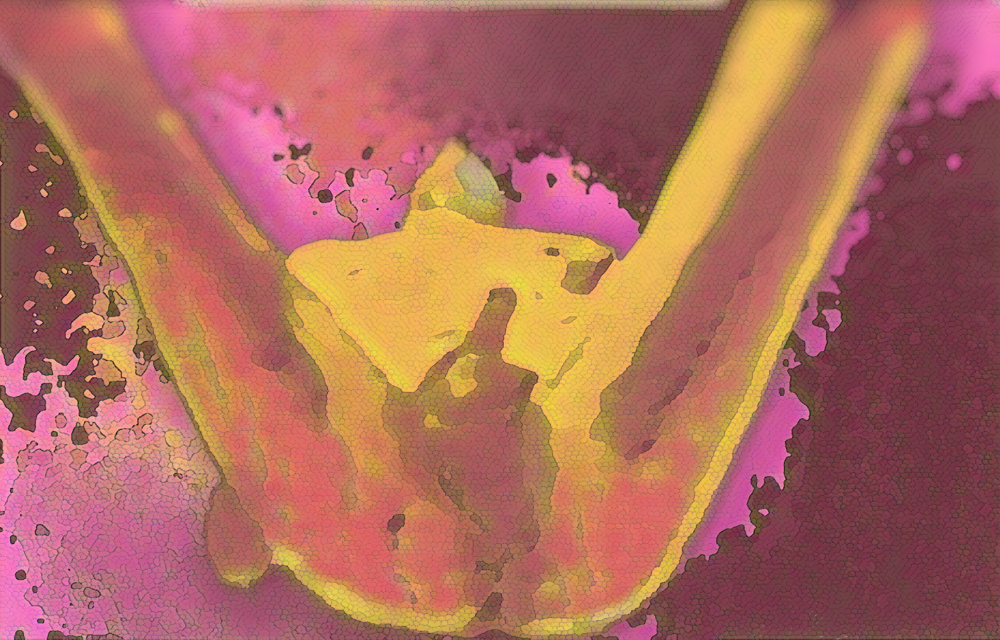

Natasha Bajc · 2026
The body processed, returned, and stripped of its alibi. Three works on the uncovered male form — rendered, titled, and presented for consideration in the 18th Annual NUDE, Manifest Gallery, Cincinnati.

Fig I. The Technosomatic Homunculus
The nude in this body of work has been passed through a machine. Photographed, processed, run through digital procedures that introduce crosshatch, geological strata, the visual logic of a surface under pressure. What returns is not the original body and not pure image — something that bears the mark of having been translated, of having survived its own procedure.
The male body presented here is not idealized, not available, not performing. It has been submitted to the same clinical process the Technosomatic framework applies to all its subjects: the body as data, the data as body. The flesh that resists full translation is exactly the flesh that remains.
Three works. Three registers. One figure across time, pose, and proximity — from the monumental to the geological close-up. The body does not disappear into the process. It becomes more itself.

Fig. 01 — Triptych Corpus (I, II, III) · 30″ × 120″
Three states of the same male body. The chartreuse ground — acid, artificial, hostile — refuses to recede. The etching texture denies the flesh its softness while making it more present. Not heroic nudes. The canvas receives ink, then receives paint: a double translation that marks the body twice. Three poses, three exposures — the body as specimen under a ground that will not recede into neutrality.
The odalisque as historically passive, available, displayed — inverted by the female gaze that produces the image. Amber and ochre push the body toward terracotta, something fired. The architectural cold of the background reads against the body's radiated warmth. The pose is simultaneously vulnerable and unselfconscious. The glasses insist on a particular Tuesday afternoon. That specificity is the work's sharpest edge.

Fig. 02 — Male Odalisque · 48″ × 43″

Fig. 03 — Otium · 30″h × 40″w
The Roman concept of private leisure — time spent on oneself, away from public obligation, slightly idle, slightly shameless. A close-up so extreme the body becomes terrain: cracked mosaic, heat map, the skin read as geological surface. The digital process turns the explicit into the abstract and the abstract back into the intimate. The body at its most private, in the middle of an ordinary afternoon. The site of otium — the place and the time simultaneously.

Natasha Bajc is a Serbian-born, Los Angeles-based artist, architect, and researcher working at the intersection of the body, technology, and digital process. Her practice operates under the framework of Technosomatic Architecture — an inquiry into how the body is translated, processed, and returned altered through digital and material systems.
Bajc holds advanced training in architecture and computer science and has taught at the collegiate level in Los Angeles, with affiliations including SCI-Arc, UCLA and USC. She is founder of Nexus Hestia Technologies. She gave one of the first TEDx talks in Belgrade in 2010 and participated in the Venice Biennale of Architecture in 2018. The Loop of Being was exhibited at the Beijing Biennale, 2025.
Her practice operates under the framework of Technosomatic Architecture — the primary body of work — spanning digital print on canvas, found object sculpture, holographic installation, large-scale interactive installation, and video. Current works are presented through Technosomatic — Rendered and Technosomatic Real. Bajc lives and works in Los Angeles.